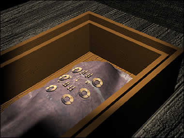

Lord's attendant
This coffin contains the body of a woman. It may be another of the lord's wives or one of his concubines. The practice of following in death was common in the Shang and Zhou dynasty. Kings may have been buried with guards, concubines, wives or servants. Her body is covered with a piece of silk material. On top of the silk are a number of jade plaques, beads and discs. The number of jade pieces in this coffin shows that this person was quite important and wealthy during life. Jade had a very special meaning in ancient Chinese burials. It was thought to provide protection from bad spirits and preserve the body. Jade had been used for thousands of years before in tombs. See how jade was used in tombs during Neolithic times Click on the body to find out more |